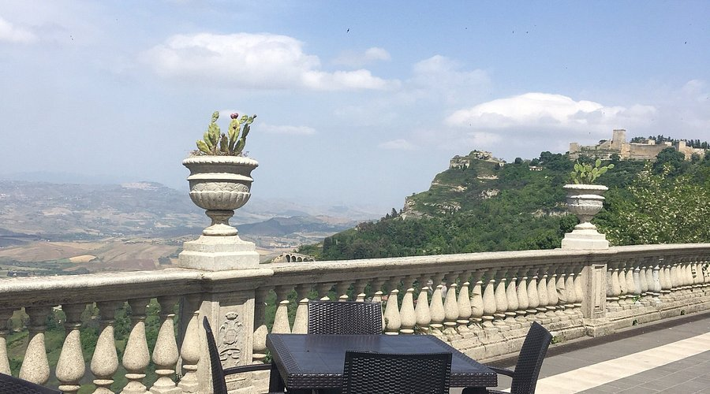
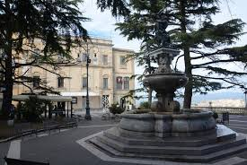
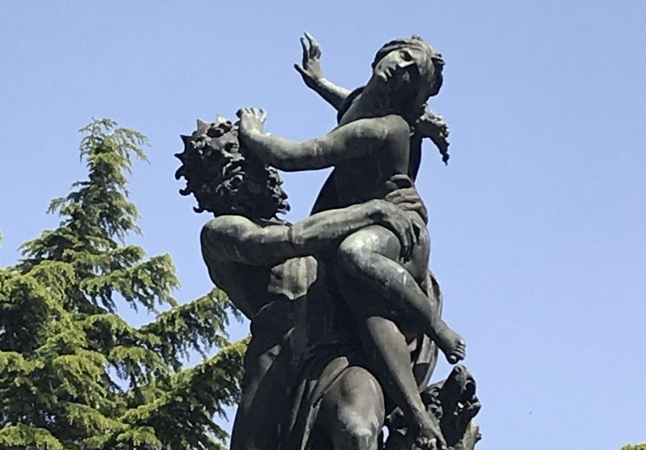
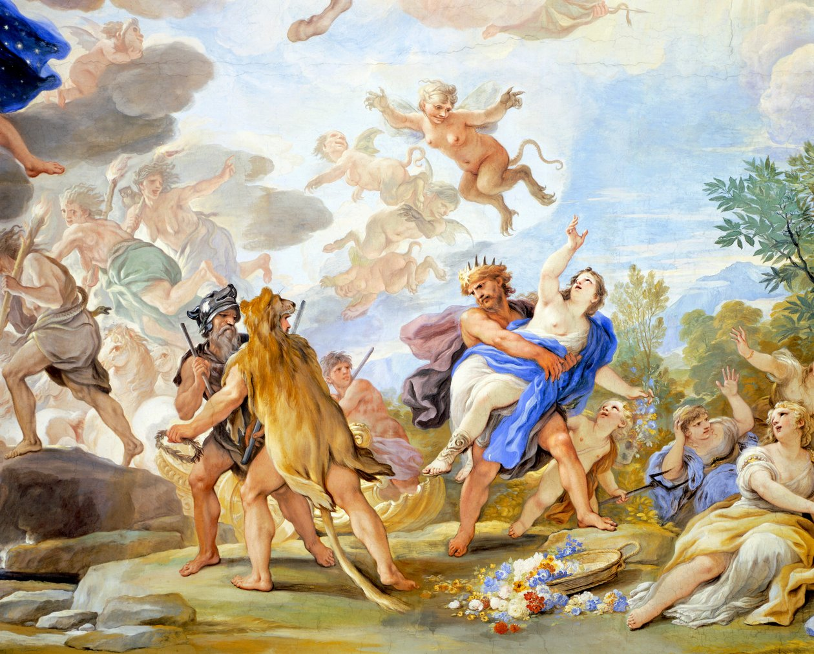

Condiderato il Belvedere di Enna, Piazza Francesco Crispi ospita una terrazza panoramica sospesa sul cuore della Sicilia che ospita la fontana del Ratto di Proserpina, copia del celebre capolavoro del Bernini. Secondo il mito, fu proprio presso il vicino lago di Pergusa che Plutone, re degli Inferi, emerse dalle viscere della terra per rapire la giovane Proserpina mentre coglieva fiori.
La Piazza così come la vediamo oggi risale al 1927 realizzata nell'ampio programma tendente a canbiare il volto di Enna, appena diventata capoluogo di provincia. Prima era indicata dagli ennesi come Piano di Sant'Orsola. La monumentale fontana artistica del Ratto di Proserpina fu posizionata il 2 Novembre 1935 al centro della piazza Crispi, realizzata dall'architetto Vincenzo Nicoletti, è una riproduzione in bronzo del Ratto di Proserpina, copia fedele del celebre lavoro di un modello dello scultore Gian Lorenzo Bernini.


il mito del Ratto di proserpina, ambientato presso il lago di Pergusa, racconta come Plutone, Dio degli inferi, rapì la giovane figlia di Cerere per portarla con sè nel regno delle ombre. la madre, dea dell'agricoltura, fù travolta da un dolore così profondo da abbandonare la cura della terra, causando una carestia che colpì l'intera umanità.
Alla fine Giove intervenne, stabilendo che Proserpina avrebbe trascorso sei mesi con Plutone e sei mesi con sua madre, dando così origine alle stagioni: quando Proserpina è con Plutone, la terra è inaridita e priva di vita (inverno), mentre quando è con Cerere, la terra fiorisce e prospera (primavera ed estate). Questo mito simboleggia il ciclo della vita e della morte, nonché il legame tra la natura e le forze divine.

Scansiona il codice QR per raggiungere Piazza Francesco Crispi.